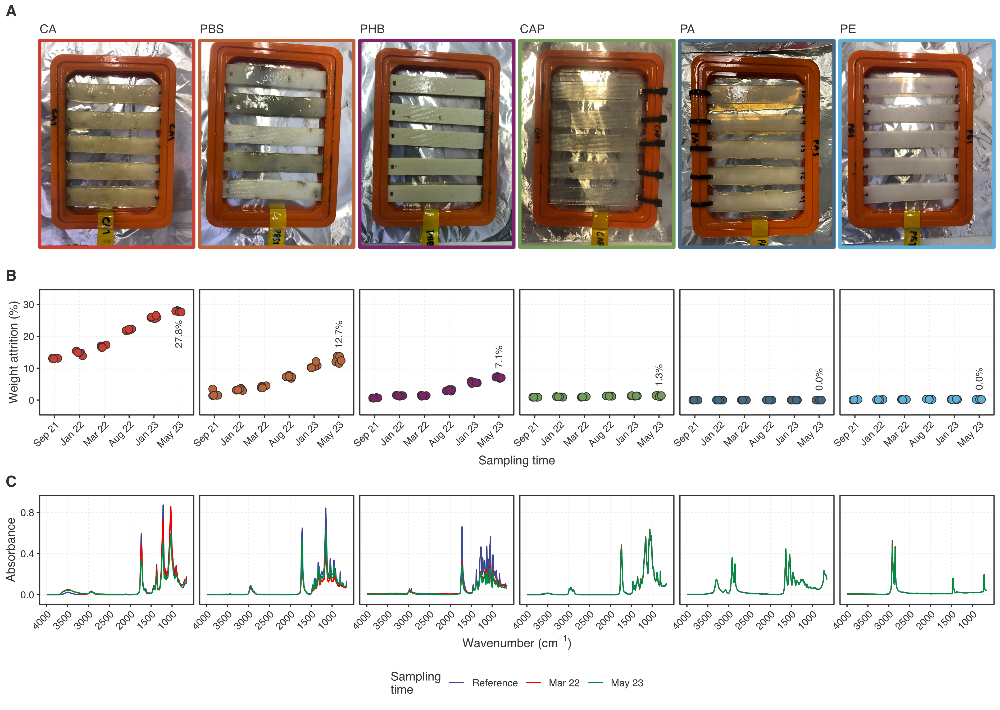
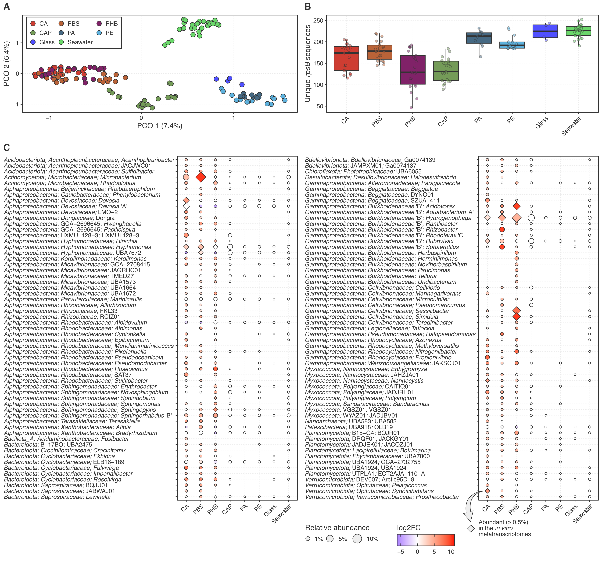
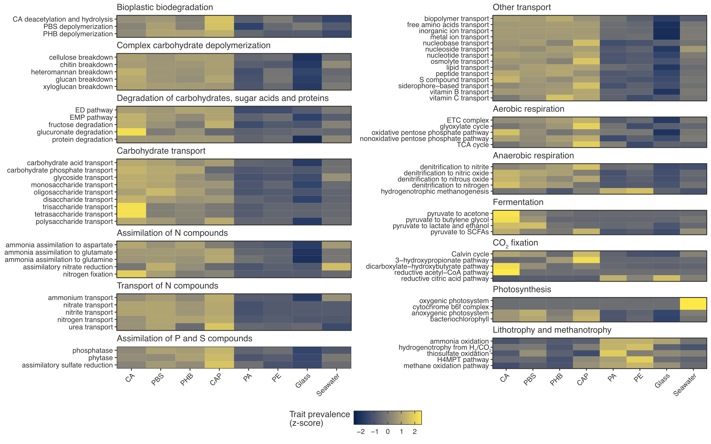
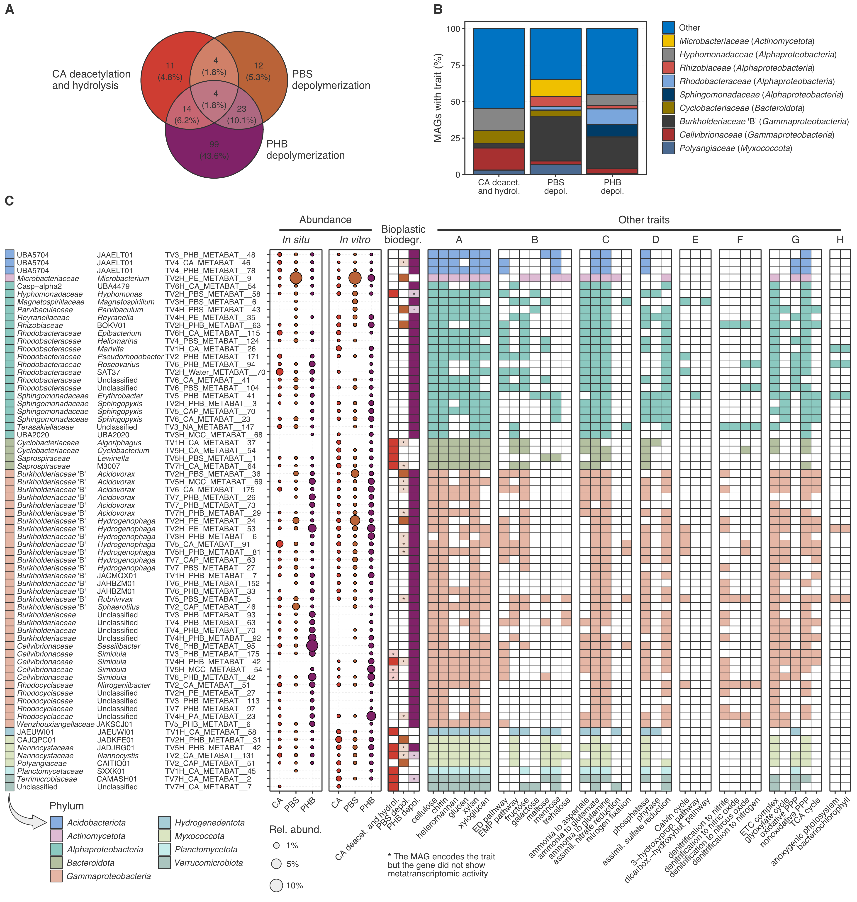
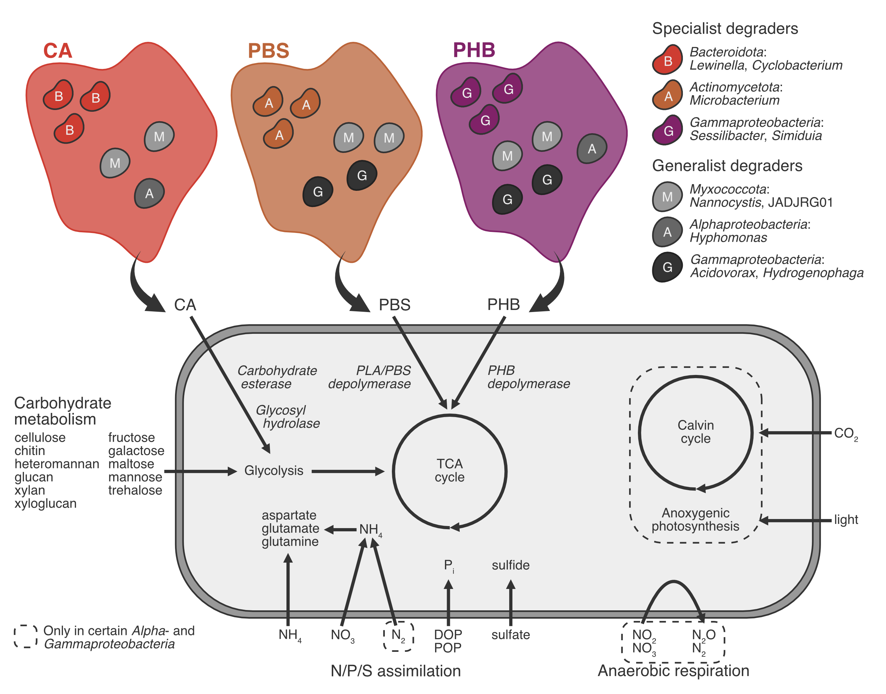

Bioplastic biodegradability shapes microbial communities in a coastal brackish environment
Last updated on 13 April 2026
Our study "Bioplastic biodegradability shapes microbial communities in a coastal brackish environment" is now published in the ISME Journal. You can find the article here.
Plastic pollution is a big environmental problem, and bioplastics are often promoted as a greener alternative. However, bioplastic biodegradation depends on the environment. Many materials only degrade under certain conditions (for example, composting), but biodegradation happens much more slowly in the ocean. There is no consensus at the moment about the general biodegradability of different bioplastic materials, and we lack long-term functional data on the plastisphere (which is how we usually refer to the microbial communities associated with plastics). In this study we monitored the biodegradation of six commonly used bio-based bioplastic materials at a coastal site in the Baltic Sea for almost two years under both natural (in situ) and standardized (in vitro) conditions.
We found that not all bioplastic materials behave in the same way: cellulose acetate (CA), polybutylene succinate (PBS) and polyhydroxybutyrate-valerate (PHB) showed visible biofilm formation early on and had measurable biodegradation over time, but cellulose acetate propionate (CAP), polyamide (PA) and polyethylene (PE) degraded very little. It is important to note that even the materials that did degrade, did so very slowly: CA, the most biodegradable of the tested materials, degraded only 27.8% after almost two years under in situ conditions. This shows that “bioplastic” does not automatically mean “easily biodegradable” in real-world coastal conditions.

We used metagenomics and metatranscriptomics to track the microorganisms associated with the bioplastics. We observed similar microbial communities on the three biodegradable plastics (CA, PBS and PHB), suggesting that biodegradability itself is a major force driving which microbes can grow on a certain bioplastic. We compared the abundance of each microbial population across the different bioplastics and identified several populations that were closely associated with the biodegradable plastics. Importantly, many of these abundant populations had metatranscriptomic activity when growing in vitro with bioplastic as the only carbon source, which is a strong indication that they are tightly connected to the biodegradation of these materials. The microbial communities associated with the biodegradable plastics were very different from the conventional plastisphere, and so we have named them the bioplastisphere.

To investigate the bioplastisphere in more detail, we took a look at the genomes of over 5,000 microbial populations that we recovered from the metagenomic data, which are also known as MAGs ("metagenome-assembled genomes"). First we searched the MAGs for bioplastic-degrading genes, which are known from previous studies to be involved in the biodegradation of these materials. Not surprisingly, the prevalence of bioplastic-degrading genes was high in the microbial populations growing on the biodegradable plastics. We also found that the biodegradable plastics were enriched in genes linked to carbohydrate breakdown, nutrient transport, respiration and nitrogen cycling. The latter shows that bioplastic degradation is tied not only to carbon use but also to the local nitrogen budget, and the high prevalence of denitrification genes indicates a link between bioplastic degradation and the potential release of nitrous oxide, which is a potent greenhouse gas.

Again, the in vitro metatranscriptomes enabled us to identify the microbial populations that are likely involved in bioplastic biodegradation. Since these experiments had bioplastic as the only carbon source, the metatranscriptomic activity of bioplastic-degrading genes provided strong evidence of populations that are actively participating in the biodegradation of these materials. These included, among others, different members of the Alpha- and Gammaproteobacteria, Bacteroidota and Myxococcota, including many populations that were active in more than one bioplastic material. In addition to degrading bioplastics, the active members of the bioplastisphere appear to be aerobic heterotrophs with broad carbohydrate-degrading capabilities.

Our study shows that bioplastic biodegradation rates in the Baltic Sea varies across materials, seasons and experimental settings. This is important because it shows that the environmental fate of bioplastics depends on both the material itself and the conditions where it ends up. Degradation rates can be quite low in vitro, and so we need more robust industrial regulations that consider more broadly the issue of mismanaged bioplastic waste that ends up in the marine environment. Although we need to continue the search for marine biodegradable plastics, in order to mitigate plastic pollution we need to ensure the proper disposal of plastic waste and reducing plastic production at the source, which would also help lowering energy costs and greenhouse gas emissions.

The sequencing data used in this study can be found here.